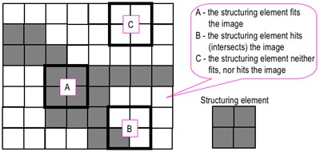

Urban Morphology & Landscape Metrics

Introduction
In this post, I am going to show how to characterise urban form using urban landscape metrics. Landscape metrics are relatively common on ecology to understand the configuration and composition of natural landscapes. Their application to urban landscape is relatively novel, though is becoming more widespread.
Most of the methods and results are discussed in Kaza (2013) and McCarty & Kaza (2015). Please refer to those articles.
Requirements
This requires R, the many libraries including raster, terra, mmand and landscapemetrics.
I strongly recommend that you read through R spatial by Robert Hijmans, the author of the raster and terra packages. terra is a newer implementation of raster. Usually it is faster, but it does not have all the functionality of raster. So I am going to switch between the two as necessary.
Acquire data
I am going to use a small section of the US National Land Cover Dataset for 2011 from United States Geological Survey. You are welcome to use any categorical raster data. If you are interested in automatically downloading the data with the script try FedData package from github.
Explore the data
raster::raster creates a raster object, while terra::rast creates as SpatRaster object. Both packages have writeRaster function, but I strongly recommend using the terra implementation, by using terra::writeRaster. In fact, it is a good idea to append the package name when dealing with rasters, especially since select in rasters conflict with select in dplyr. Jakub Nowosad’s blog explains how to convert between various classes of objects.
It is also useful to learn about the differences between rasterLayers, rasterStack and rasterBrick, if you are using raster package. terra on the other hand, only has a single class spatRaster and you can append layers using the traditional c function.
Initialise the packages and read them into R along with the raster.
library(raster)
library(rasterVis)
library(sf)
library(tidyverse)
lc <- here("tutorials_datasets", "lmetrics", "c11_37063.img") %>% raster::raster() %>% raster::ratify()
nlcd_class <- read_csv(here("tutorials_datasets", "lmetrics", "legend_csv.csv") , col_types = 'iccc_')
rat <- levels(lc)[[1]] %>% merge(nlcd_class, by.x="ID", by.y="Value")
levels(lc) <- ratThe land cover is assigned to the object lc. I prepared it so that it is a categorical raster with the right colors in the colortable. See attributes below.
lc
# class : RasterLayer
# dimensions : 1483, 892, 1322836 (nrow, ncol, ncell)
# resolution : 30, 30 (x, y)
# extent : 1510215, 1536975, 1558875, 1603365 (xmin, xmax, ymin, ymax)
# crs : +proj=aea +lat_0=23 +lon_0=-96 +lat_1=29.5 +lat_2=45.5 +x_0=0 +y_0=0 +ellps=GRS80 +units=m +no_defs
# source : c11_37063.img
# names : Layer_1
# values : 11, 95 (min, max)
# attributes :
# ID Class Classification colortable
# from: 11 Water Open Water #5475A8
# to : 95 Wetlands Emergent Herbaceous Wetlands #64B3D5Here is the frequency table of counts of cells in various categories and visualisation of the raster.
freq(lc)
# value count
# [1,] 11 25218
# [2,] 21 170495
# [3,] 22 74482
# [4,] 23 42961
# [5,] 24 10213
# [6,] 31 1214
# [7,] 41 222663
# [8,] 42 109305
# [9,] 43 30740
# [10,] 52 16259
# [11,] 71 37211
# [12,] 81 68416
# [13,] 82 4926
# [14,] 90 41920
# [15,] 95 1180
# [16,] NA 465633
rasterVis::levelplot(lc, att="Classification", ylab=NULL, xlab=NULL, scales=list(y=list(draw=FALSE), x=list(draw=FALSE)), col.regions=levels(lc)[[1]]$colortable, main="2011 Land Cover")
Analyse the raster
Select the categories that are urban, These are Values 21,22,23,24 and set them to 1. Set the rest to 0. Another alternative is reclassify function from the raster package to achieve the same output
urb_lc <- calc(lc, fun = function(x){ifelse(x>=21 & x<=24, 1, 0)})%>% ratify
freq(urb_lc)
# value count
# [1,] 0 559052
# [2,] 1 298151
# [3,] NA 465633
(p <- levelplot(urb_lc, att="ID", ylab=NULL, xlab=NULL, main = "Urban Land Cover", colorkey=FALSE, scales=list(y=list(draw=FALSE), x=list(draw=FALSE))))
Here is an approach using terra
library(terra)
lc_terra <- terra::rast(lc)
urb_lc_terra <- terra::ifel(lc_terra>=21 & lc_terra<=24,1,0)
plot(urb_lc_terra) Often it becomes necessary to remove temporary files that
Often it becomes necessary to remove temporary files that terra has written to the disk because you are running out of space. Using the following function, usually solves the problem.
tmpFiles(remove = F)
# character(0)Otherwise explicitly, specify file.names in each terra functions and manually delete them when you don’t need them. This is a better option.
Now construct the urban patches from the urban raster. For this you need landscapemetrics library.
The requirements to calculate meaningful landscape metrics are:
- The distance units of your projection are meter, as the package converts units internally and returns results in either meters, square meters or hectares. For more information see the help file of each function.
- The raster is categorical and the classes are integers (0,1….n)
A naive urban landscape metrics are ready to be calculated from the binary image after checking for the landscape.
For the sake of brevity, I am only checking the area metrics. I am going to ignore patches of class 0 (background).
devtools::install_github("r-spatialecology/landscapemetrics")
library(landscapemetrics)
library(skimr)
options_landscapemetrics(to_disk = TRUE)
check_landscape(urb_lc_terra)
# layer crs units class n_classes OK
# 1 1 projected m integer 2 ✔
naivemetrics1 <- calculate_lsm(as.factor(urb_lc_terra), what = "lsm_p_area")
naivemetrics1 %>% filter(class==1) %>% arrange(desc(value))
# # A tibble: 400 × 6
# layer level class id metric value
# <int> <chr> <int> <int> <chr> <dbl>
# 1 1 patch 1 728 area 25261.
# 2 1 patch 1 865 area 506.
# 3 1 patch 1 1077 area 163.
# 4 1 patch 1 956 area 106.
# 5 1 patch 1 736 area 36.4
# 6 1 patch 1 1119 area 22.3
# 7 1 patch 1 1066 area 18.4
# 8 1 patch 1 936 area 18.3
# 9 1 patch 1 993 area 17.7
# 10 1 patch 1 746 area 16.1
# # … with 390 more rowsThere is a bug in the patch labels in landscapemetrics package before version 1.5.5. If you are getting wrong resutls, please check to make sure that you have the most up to date version from github.
The area of the cells in one of the patches is substantially larger than the next largest patch. This means most of urban area in this raster is connected and forms a single patch, even though visually we can see distinct neighbourhoods. Most of these urban areas are connected through roads. These roads should not technically should not count towards urban area characteristics. To do this problem, we will have to use a Highways vector file an remove them from the raster. To read the vector file and to do some vector operations, we need rgdal, sp and rgeos libraries. Load them and modify the path suitably to read the Highway file.
library(sf)
highways <- here("tutorials_datasets", "lmetrics", "Highways.shp") %>%
read_sf()%>% st_transform(crs(urb_lc_terra))The highways and the lc objects have different projections and coordinate systems. We need to align them if we can do any operations. Visualise them by styling the width of the line using lwd parameter. Note that Width attribute is a factor and therefore numerical operations are not permitted. We need to convert it to numerical value before styling the lines.
p + latticeExtra::layer(sp.lines(highways %>% as("Spatial"), lwd=as.numeric(highways$Width)/24, col='red'))
Buffer the highways with a specified width.I am using the NCDOT guidelines that 4 lane highways have 150-300ft of Right of Way. So assuming 65 ft per lane (20m), we get
highways <- highways %>%
filter(!is.na(LANES)) %>%
mutate(width_m = as.numeric(LANES) * 20)
highways_buffer <- st_buffer(highways, dist=highways$width_m)Now extract the cell numbers that overlap with the buffer and set those values to 0.
v <- terra::extract(urb_lc_terra, vect(highways_buffer), cells=TRUE, touches=T)
urb_lc2 <- urb_lc_terra
urb_lc2[v$cell] <- 0
p2 <- levelplot(urb_lc2, ylab=NULL, xlab=NULL, main="Urban (Highways Removed)", colorkey=FALSE, margin = FALSE, scales=list(y=list(draw=FALSE), x=list(draw=FALSE)))
print(p, split=c(1, 1, 2, 1), more=TRUE)
print(p2, split=c(2, 1, 2, 1))
metrics2 <- calculate_lsm(urb_lc2, what = "lsm_p_area")
metrics2 %>% arrange(desc(value))
# # A tibble: 2,471 × 6
# layer level class id metric value
# <int> <chr> <int> <int> <chr> <dbl>
# 1 1 patch 0 1 area 59735.
# 2 1 patch 1 930 area 1018.
# 3 1 patch 1 1150 area 779.
# 4 1 patch 1 780 area 454.
# 5 1 patch 1 844 area 452.
# 6 1 patch 1 1394 area 349.
# 7 1 patch 1 1088 area 322.
# 8 1 patch 1 1377 area 305.
# 9 1 patch 1 920 area 280.
# 10 1 patch 1 1283 area 277.
# # … with 2,461 more rowsThe before picture is on the left and the after is on the right. We can now see some improvement, but it is not great. This because the vectorfiles are not perfectly aligned with the raster files and therefore any overlay operations leave a significant number of small error patches.To deal with this we need to turn to morphological operations borrowed from Image Processing literature.
Exercise
- Repeat the exercise with highways object as “sp” and raster objects. See the performance differential.
A digression into morphological operations
There are four basic operations. I will go through them one by one. But first we need to convert the raster into a matrix that the library mmand can process.
require(mmand)
urb_mat <- as.matrix(urb_lc2)
urb_lc3 <- urb_lc2Structuring elements
Morphological operations require something called a structuring element that probes the image. 
Structuring elements can be of any dimension But usually they are of odd because it is easier to locate the center. For this exercise, I am using a structuring element of a 3x3 matrix of 1s. If you want a fancy structuring element like a cross, create a binary image with 0s and 1s such as k2 below.
(k <- matrix(1,nrow=3,ncol=3))
# [,1] [,2] [,3]
# [1,] 1 1 1
# [2,] 1 1 1
# [3,] 1 1 1
k2 <- k
k2[1,1] <- k2[1,3] <- k2[3,1] <- k2[3,3]<- 0
k2
# [,1] [,2] [,3]
# [1,] 0 1 0
# [2,] 1 1 1
# [3,] 0 1 0Erosion
The erosion of a binary image \(A\) by a structuring element \(S\) (denoted \(A \ominus S\)) produces a new binary image \(B\) of the dimensions of \(A\), with 1s in the locations, where the structuring element \(S\) ‘fits’ \(A\). i.e. If the center of \(S\) is placed on \((x,y)\) of \(A\) and if 1s of the structuring element also correspond to the 1s of \(A\), then \((x,y)\) of B is rendered 1 otherwise 0. See the effect of erosion on the image below
urb_mat2 <- erode(urb_mat, k)
urb_mat2[!is.finite(urb_mat2)] <- NA
urb_lc3[] <- urb_mat2
urb_lc3 <- urb_lc3
p3 <- levelplot(urb_lc3, ylab=NULL, xlab=NULL, main = "Erosion (k)", colorkey=FALSE, margin = FALSE, scales=list(y=list(draw=FALSE), x=list(draw=FALSE)))
print(p2, split=c(1, 1, 2, 1), more=TRUE)
print(p3, split=c(2, 1, 2, 1))
Dilation
The dilation of a binary image \(A\) by a structuring element \(S\) (denoted \(A \oplus S\)) produces a new binary image \(B\) of the dimensions of \(A\), with 1s in the locations, where the structuring element \(S\) ‘hits’ \(A\). i.e. If the center of \(S\) is placed on \((x,y)\) of \(A\) and if 1s of the structuring element also correspond at least some of the 1s of \(A\), then \((x,y)\) of B is rendered 1 otherwise 0. Dilation has the opposite effect to erosion – it adds a layer of pixels to both the inner and outer boundaries of regions. See the effect of dilation on the original image below.
urb_mat2 <- dilate(urb_mat, k)
Closing
Closing is simply dilation followed by erosion: \(A \bullet S = (A \oplus S) \ominus S\). Closing is so called because it can fill holes in the regions while keeping the initial region sizes. You can see the effect of closing compared to the original image below.
urb_mat2 <- closing(urb_mat, k)
Opening
Opening is simply erosion followed by dilation: \(A \circ S = (A \ominus S) \oplus S\). Opening is so called because it can open up a gap between objects connected by a thin bridge of pixels. Any regions that have survived the erosion are restored to their original size by the dilation. You can see the effect of opening compared to the original image below
urb_mat2 <- opening(urb_mat, k)
From the above experiments, it should be obvious that opening gives us the best option for urban landscape metrics. Experiment with other structuring elements.

Landscape metrics
Now we are ready to create some metrics. Let’s create some metrics for each patch. Some of the key metrics are area (area of the patch) and core areaindex (area after eliminating edges). You can use these to further threshold the patches that might be too small to matter.
check_landscape(urb_lc3)
# layer crs units class n_classes OK
# 1 1 projected m integer 2 ✔
ps.data <- calculate_lsm(urb_lc3, level = "patch") %>% filter(class==1 )
ps.data %>%
pivot_wider(names_from = metric, values_from = value) %>%
skim()| Name | Piped data |
| Number of rows | 1194 |
| Number of columns | 16 |
| _______________________ | |
| Column type frequency: | |
| character | 1 |
| numeric | 15 |
| ________________________ | |
| Group variables | None |
Variable type: character
| skim_variable | n_missing | complete_rate | min | max | empty | n_unique | whitespace |
|---|---|---|---|---|---|---|---|
| level | 0 | 1 | 5 | 5 | 0 | 1 | 0 |
Variable type: numeric
| skim_variable | n_missing | complete_rate | mean | sd | p0 | p25 | p50 | p75 | p100 | hist |
|---|---|---|---|---|---|---|---|---|---|---|
| layer | 0 | 1 | 1.00 | 0.00 | 1.00 | 1.00 | 1.00 | 1.00 | 1.00 | ▁▁▇▁▁ |
| class | 0 | 1 | 1.00 | 0.00 | 1.00 | 1.00 | 1.00 | 1.00 | 1.00 | ▁▁▇▁▁ |
| id | 0 | 1 | 754.50 | 344.82 | 158.00 | 456.25 | 754.50 | 1052.75 | 1351.00 | ▇▇▇▇▇ |
| area | 0 | 1 | 13.58 | 52.31 | 0.09 | 0.36 | 1.08 | 4.93 | 984.60 | ▇▁▁▁▁ |
| cai | 0 | 1 | 24.30 | 28.92 | 0.00 | 0.00 | 10.00 | 48.80 | 91.12 | ▇▂▂▂▁ |
| circle | 0 | 1 | 0.61 | 0.12 | 0.27 | 0.53 | 0.62 | 0.69 | 0.93 | ▁▃▇▅▁ |
| contig | 0 | 1 | 0.54 | 0.26 | 0.00 | 0.25 | 0.56 | 0.79 | 0.97 | ▁▇▃▅▆ |
| core | 0 | 1 | 10.38 | 44.52 | 0.00 | 0.00 | 0.09 | 2.34 | 825.66 | ▇▁▁▁▁ |
| enn | 0 | 1 | 156.90 | 166.39 | 60.00 | 67.08 | 120.00 | 152.97 | 1615.55 | ▇▁▁▁▁ |
| frac | 0 | 1 | 1.06 | 0.04 | 1.00 | 1.04 | 1.05 | 1.07 | 1.22 | ▇▆▂▁▁ |
| gyrate | 0 | 1 | 97.64 | 142.60 | 0.00 | 27.36 | 45.17 | 98.52 | 1577.77 | ▇▁▁▁▁ |
| ncore | 0 | 1 | 0.58 | 0.66 | 0.00 | 0.00 | 1.00 | 1.00 | 5.00 | ▇▁▁▁▁ |
| para | 0 | 1 | 0.05 | 0.03 | 0.00 | 0.02 | 0.05 | 0.08 | 0.13 | ▇▆▃▇▁ |
| perim | 0 | 1 | 1561.21 | 3720.00 | 120.00 | 300.00 | 540.00 | 1200.00 | 74040.00 | ▇▁▁▁▁ |
| shape | 0 | 1 | 1.39 | 0.42 | 1.00 | 1.15 | 1.25 | 1.43 | 5.90 | ▇▁▁▁▁ |
ggplot(ps.data)+
geom_histogram(aes(x=value)) +
facet_wrap(~metric, scales="free")
It seems to me there are still some really small patches as evidenced the left skews of the distributions in area, core area index (cai) and right skew in the perim.area.ratio. We can use a combination of thresholds on these indices to remove some ‘error’ patches that might skew our urban indices. I choose, core area index \(=\) 0 or area less than $<=$0.5ha arbitrarily based on the histogram. Let’s first calculate the class statistics without the modification and then do it with the modification.
ignore_patches <- ps.data %>%
pivot_wider(names_from = metric, values_from = value) %>%
filter(area<.5 | cai==0) %>%
pull('id')
ignore_raster <- 1-(get_patches(urb_lc3, class=1)$layer$class_1 %in% ignore_patches) %>% rast
urb_lc4 <- ignore_raster * urb_lc3
levelplot(urb_lc4, ylab=NULL, xlab=NULL, main = "Removed Small Patches", colorkey=FALSE, margin = FALSE, scales=list(y=list(draw=FALSE), x=list(draw=FALSE)))
Compare the final metrics with the others along the way. I am going to convert the area to sq.km to make things easier to read.
urb_df <- c(urb_lc_terra, urb_lc2, urb_lc3, urb_lc4) %>%
calculate_lsm(level = 'landscape', type = "aggregation metric") %>%
mutate(layer = recode(layer, `1` = "Naive", `2` = "Improv1", `3` = "Improv2", `4` = "Final")) %>%
dplyr::select(layer, metric, value) %>%
pivot_wider(names_from = layer, values_from = value)
| metric | Naive | Improv1 | Improv2 | Final |
|---|---|---|---|---|
| ai | 93.4 | 95.0 | 96.4 | 96.8 |
| cohesion | 99.8 | 99.9 | 99.9 | 99.9 |
| contag | 36.1 | 48.2 | 52.4 | 53.5 |
| division | 0.8 | 0.4 | 0.4 | 0.4 |
| enn_cv | 99.4 | 102.5 | 103.6 | 91.7 |
| enn_mn | 113.2 | 127.9 | 152.6 | 161.4 |
| enn_sd | 112.5 | 131.0 | 158.1 | 148.0 |
| iji | NA | NA | NA | NA |
| lsi | 31.8 | 24.7 | 18.2 | 16.5 |
| mesh | 14822.7 | 46115.4 | 48010.0 | 48414.9 |
| np | 1126.0 | 2471.0 | 1351.0 | 765.0 |
| pd | 1.5 | 3.2 | 1.7 | 1.0 |
| pladj | 93.4 | 95.0 | 96.4 | 96.8 |
| split | 5.2 | 1.7 | 1.6 | 1.6 |
Note that significant changes are observed in highlighted variables. In particular, number of patches change dramatically.
Exercises
There are many more improvements possible to these indices. For example,
- What happens when you use a different road network to remove the roads from the raster?
- Different structuring elements for the morphological operations.
- Different thresholds on different patch characteristics to remove erroneous urban patches.
- Instead of treating urban as a single category, what are the results when we treat it as 4 different categories?
- Perhaps explore more complex landscape metrics by characterising the configuration of urban and non-urban land cover.
Conclusions
Landscape metrics have been used in ecology for a long time to understand the fragmentation of landscape from a habitat perspective. However, we can use these metrics to understand the urban pattern as well. In particular, we can study if a place is experiencing at-the-edges-fragmentary urbanisation over time or infill-coalescent urbanisation or edge-exapnsion. These help us understand the urban development patterns over time and if any land use policy changes have made any difference in promoting particular forms of urban growth.
Nikhil Kaza
Professor
My research interests include urbanization patterns, local energy policy and equity